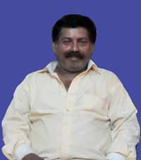

| About Us | |
|

Founder Of Durairaj Auto Works Mr.T.KANDEEPAN |
I was born on 24th of november 1976 in a nice country named india where i live till today. I live in capital of kanya kumari. I finished studies at tawit, which was very big automobile repair&maintenance company. First i start sivagaami auto works in 1985 in asaripallam jn. Now successfully runing in my Durairaj Auto works (p)ltd. In my spare time, i like to go outside with my friends to get some good beer and talk to each other. I like to bike, since i have a good talent& good experience in bike workshope (actually, i've more than 25 years experienced and well talented person in mechanical works ). I really happy in my life due to my company, my valiable customers&my family. |
Contact | Ph no:+91 944 290 6489 +91 957 878 1891 +91 994 058 4717 e-mail:drawngl@gmail.com |